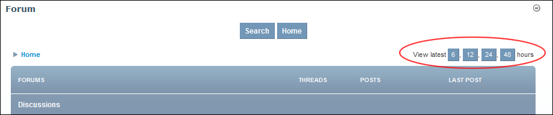

Viewing Latest Posts
How to view only the latest posts to all forums within the Forum module.
- Go to the Forum Home page. See "Go to Forum Home Page"
- At View Latest, select to view posts added within either the last 6, 12, 24, or 48 hours.

Viewing Latest Posts